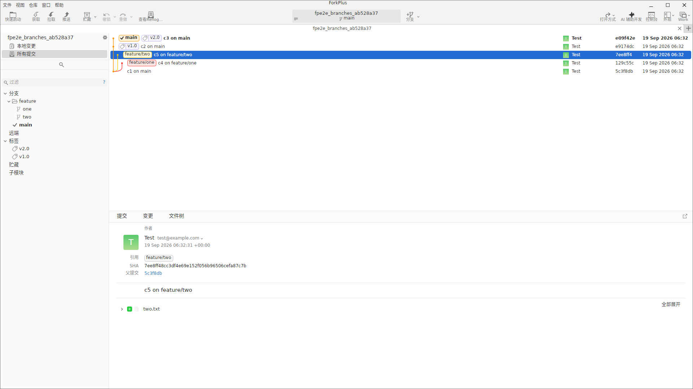
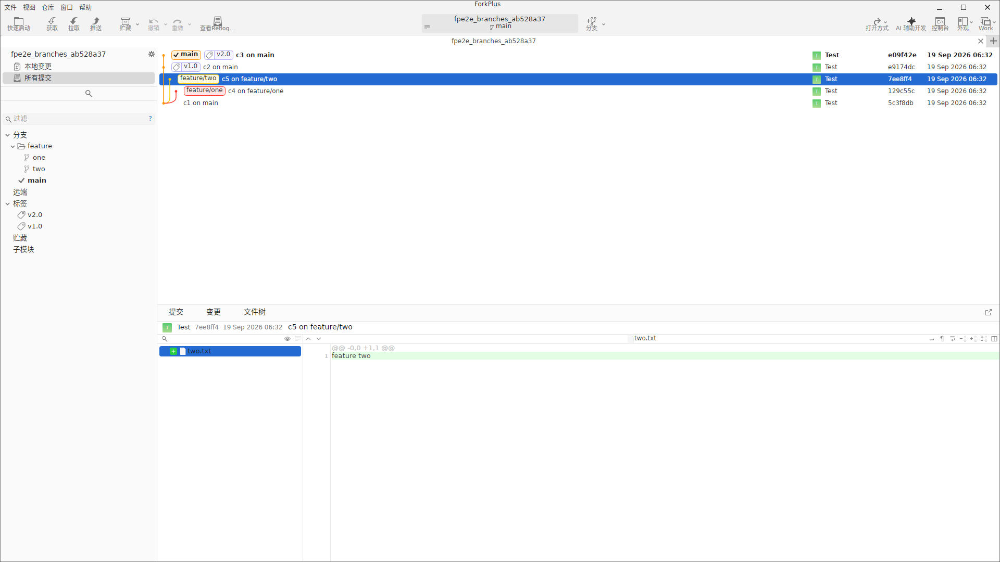
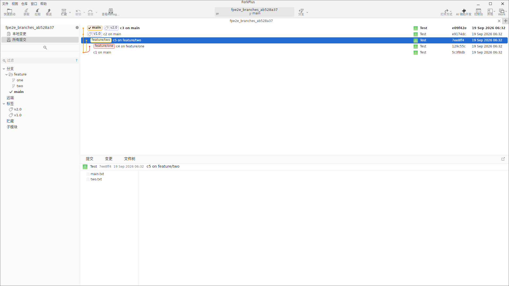
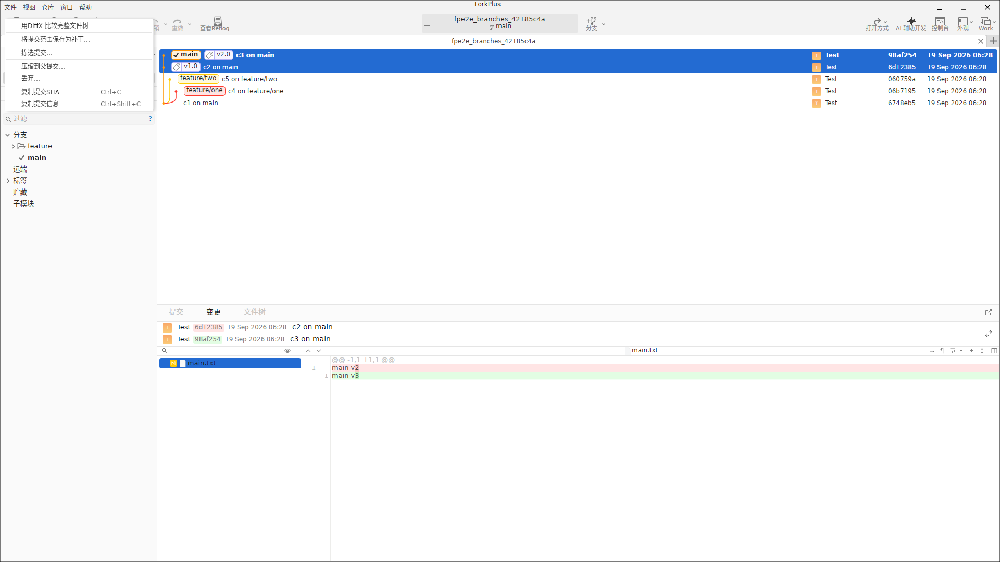
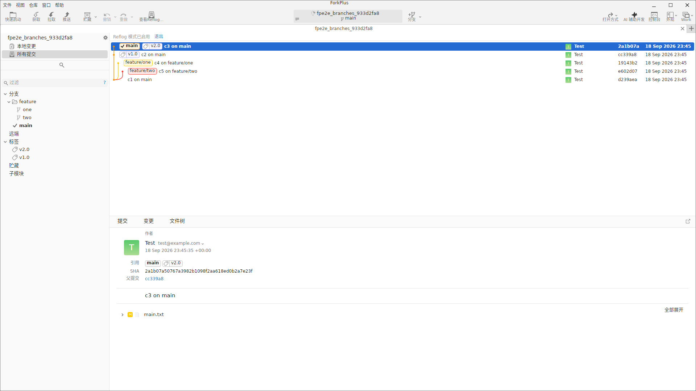

在修订列表中选中任意提交后，底部修订详情面板会加载该提交的完整信息。详情面板通过 提交 / 变更 / 文件树 三个标签页展示不同维度的内容。
提交摘要标签页
「提交」标签页集中展示一条提交的全部元信息：
- 作者：头像、用户名（Test）与邮箱（test@example.com）。
- 日期：含时区的完整提交时间（如
18 Sep 2026 23:45:35 +00:00）。 - 引用 References：该提交被哪些分支 / 标签引用（如下图的
feature/two）。 - SHA：完整 40 位哈希。
- 父提交 Parent：上一提交的短哈希。
- 提交说明：提交消息全文。
- 变更文件列表：该提交新增 / 修改 / 删除的文件，默认折叠，可点击「全部展开」逐个查看。

说明：变更文件列表按文件名列出，右侧提供「全部展开」按钮。未展开时仅显示文件图标与名称。
变更标签页：文件列表与 Diff
「变更」标签页左侧列出该提交变更的文件列表，右侧为选中文件的内容差异（Diff）。单击列表中的任意文件，右侧 Diff 立即切换到该文件的变更内容。本示例中提交 c5 on feature/two 仅变更了 two.txt 一个文件，选中后右侧显示新增行（绿色高亮，+1 统计：新增 1 行）。

小贴士：「变更」标签页是非只读的提交级 Diff，可以从文件列表快速遍历一次提交涉及的所有改动，适合代码评审。
文件树标签页
「文件树」标签页以目录树形式展示该提交时刻的完整文件快照。与「变更」只显示改动文件不同，文件树展示 整个仓库该版本的所有文件，支持文件夹层级展开。本示例显示 main.txt 与 two.txt 两个根级文件。

说明：文件树反映的是提交时刻的仓库全貌（非仅改动文件），遇到含子目录的提交可点击文件夹节点逐层展开。通过「导出完整文件树」可将该版本的目录结构导出。
导出文件树与跨版本比对
文件树还支持导出与跨版本比对：
- 导出完整文件树：将当前版本的目录结构导出到临时目录，便于脚本归档或与外部工具比对。
- 用外部工具比较文件树：在修订列表中同时选中两个修订后右键，选择「在 {工具} 中比较完整文件树」（Compare File Trees in {工具}），即可调用配置的外部比对工具（如 DiffX）对照这两份完整文件树。
前者适合把某版本结构落盘留存，后者适合直观地观察两次提交之间目录与文件的增减差异，尤其适用于评审大范围重构或多文件增删的场景。

Reflog 显示模式
开启「Reflog 模式」后，修订列表不再只展示提交历史，而是展示 HEAD 与各引用的移动记录（reflog）。进入该模式后，顶部出现「Reflog 模式已启用」横幅并提供「退出」按钮，列表会按引用更新时间顺序列出条目，并内联标注每个条目所处的分支 / 标签引用。
Reflog 特别适合恢复「看起来丢失」的提交——即使提交已从分支移除，只要它曾在 HEAD 上停留过，就会出现在 reflog 中，可据此找回其 SHA 或重新检回分支。

注意：reflog 记录会在一定时间后被 Git 清理。若需要长期保留历史提交，请在清理前为相关提交创建标签或分支。